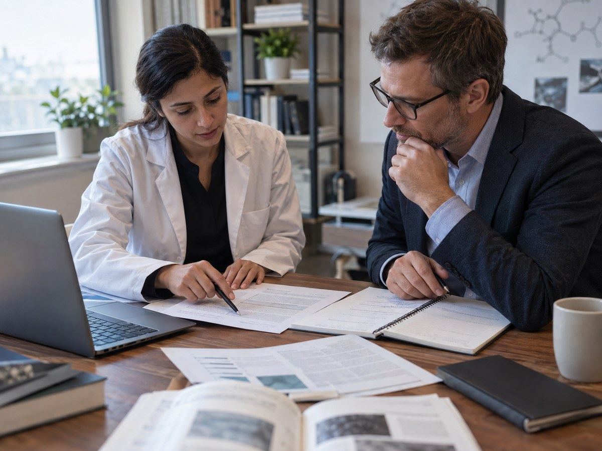
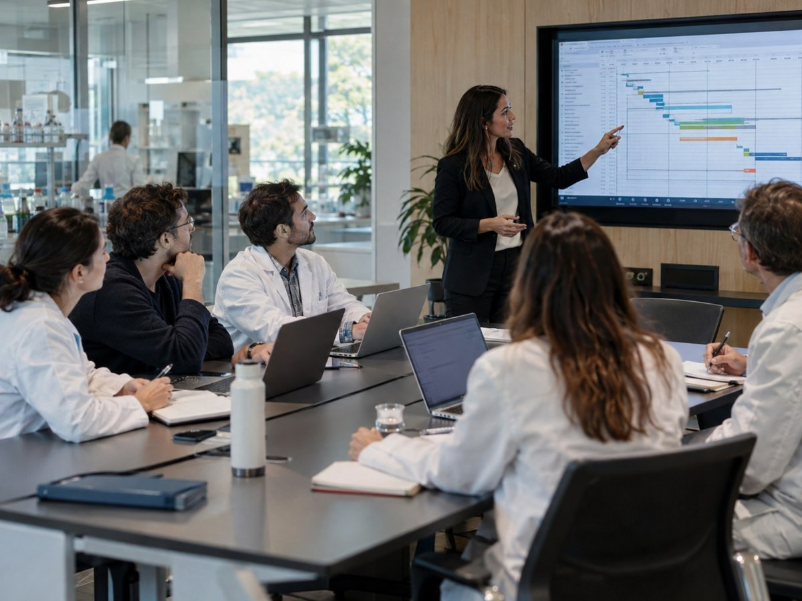
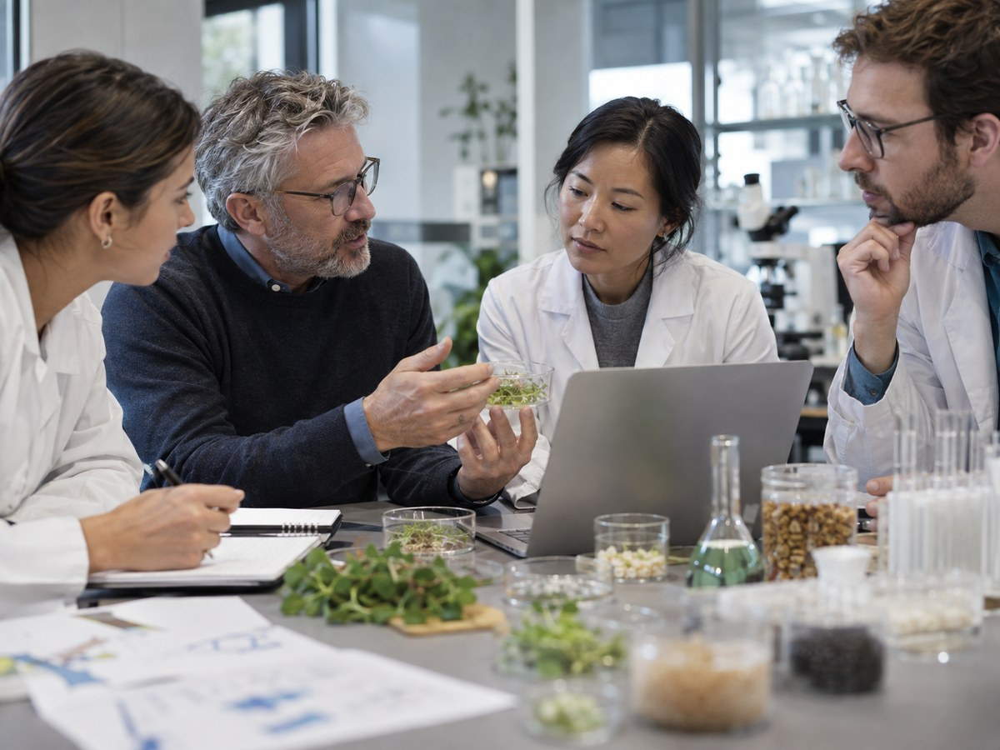
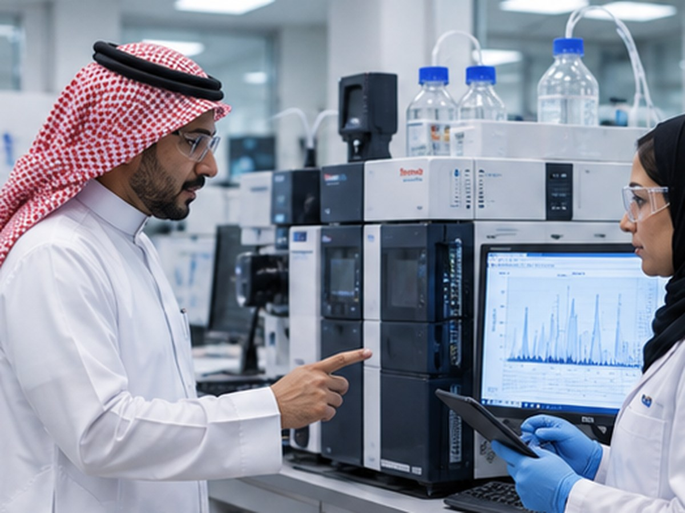
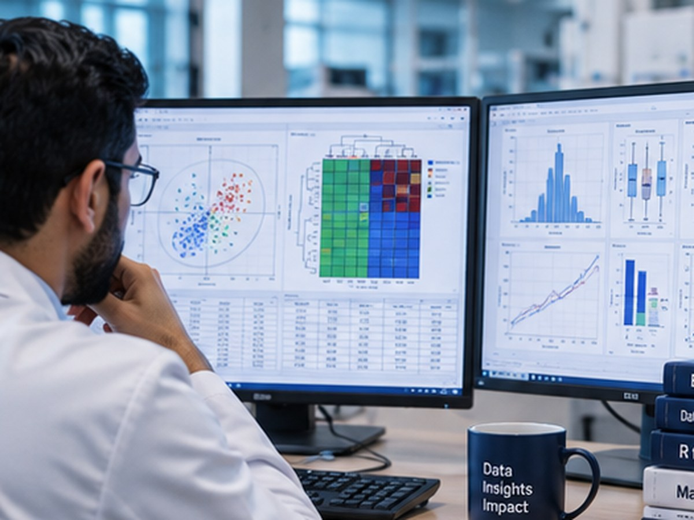
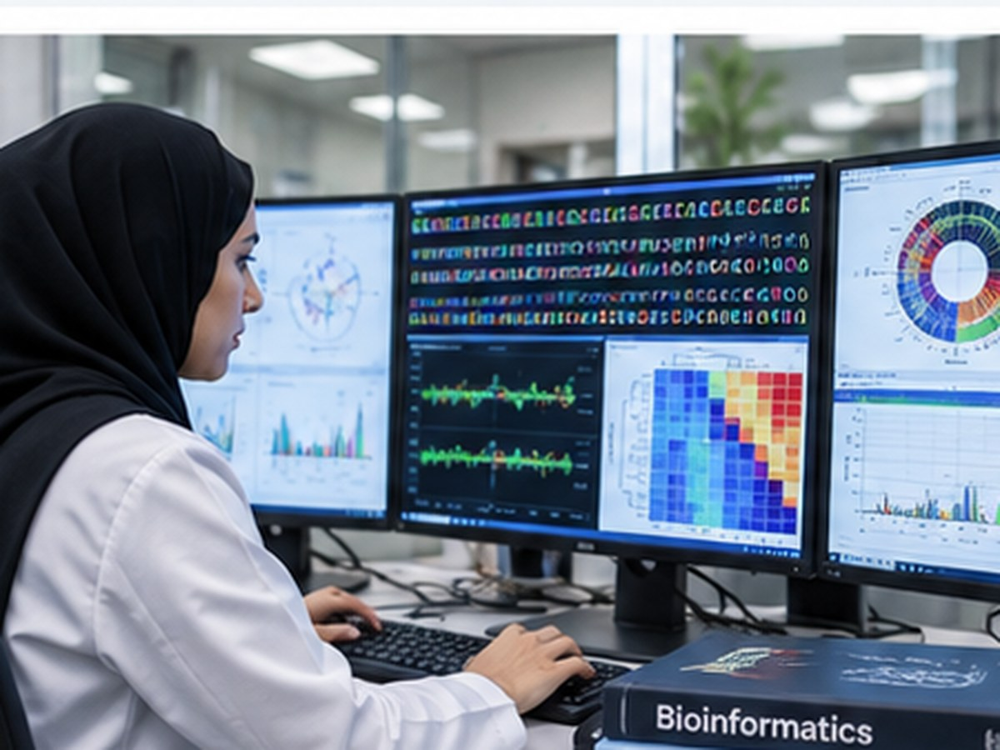
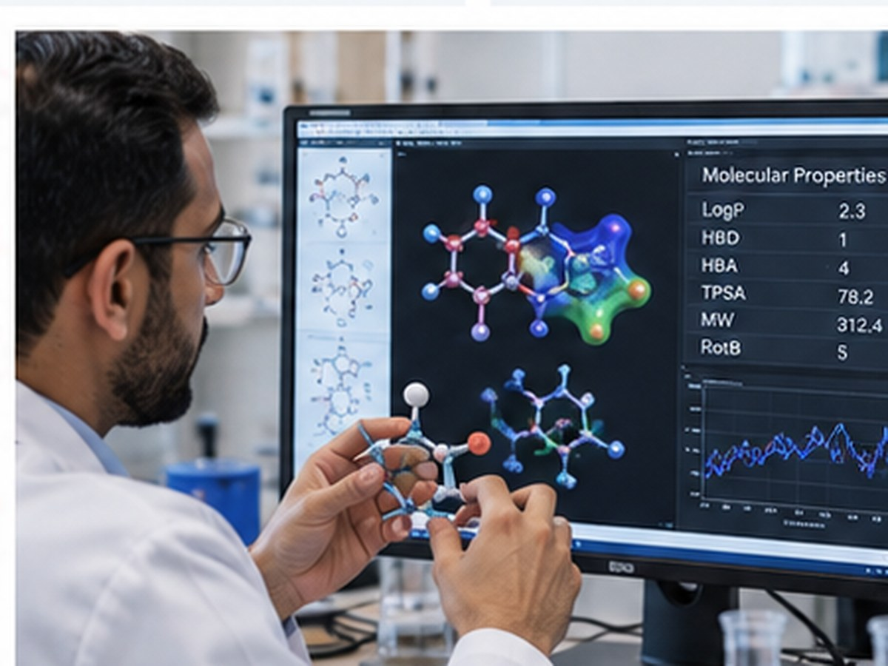
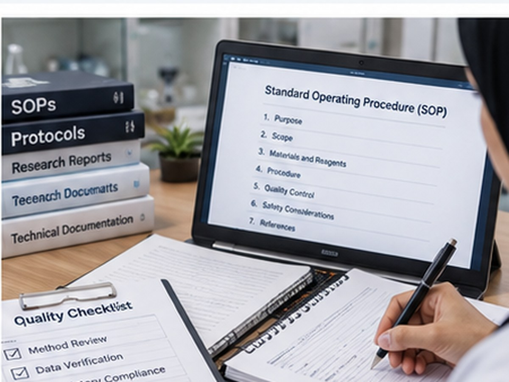

01
Research Development
Scientific concepts, research questions, hypotheses, study design and research protocols.
Learn more →Dr. Mushawa Scientific Consultancy connects scientific strategy, research project management, laboratory coordination, advanced analytics, publication and innovation into one Saudi-focused consultancy platform.
Each division can operate independently or as part of a complete research-development engagement.

Scientific concepts, research questions, hypotheses, study design and research protocols.
Learn more →
Project planning, milestones, research coordination, documentation and collaborator management.
Learn more →
Life sciences, food science, nutrition, biotechnology, agrifood and related R&D advisory.
Learn more →
Selection and coordination of universities, CROs and analytical laboratories without operating a wet lab initially.
Learn more →
Statistical analysis, visualization, scientific interpretation and research analytics.
Learn more →
Genomics, microbiome, metabolomics and biological-data analysis where permitted.
Learn more →
Molecular-property analysis, compound annotation, ADMET and computational scientific analysis.
Learn more →
Technical reports, research reports, SOPs, protocols and structured scientific documentation.
Learn more →Manuscript development, journal selection, editing, submission coordination and revision support.
Learn more →Graphical abstracts, scientific figures, posters, presentations and technical communication.
Learn more →Functional foods, nutraceutical concepts, ingredient strategy and formulation-development planning.
Learn more →Technology assessment, research commercialization, scientific innovation and translation.
Learn more →Instead of treating consultancy, laboratory work, analytics and publication as isolated services, the model connects them through one coordinated scientific pipeline.
Choose a scientific domain, then combine only the consultancy divisions required for the project.
Support for food processing research, functional foods, dietary intervention, personalized nutrition, nutrition analytics, manuscript development and translational product concepts.
Discuss this solutionStructure the question, endpoints, methods, collaborators, milestones and scientific documentation before execution begins.
Explore workflowIntegrate statistics, visualization, bioinformatics and scientific interpretation into one analysis workflow.
Explore analyticsConvert project outcomes into manuscripts, scientific communication, innovation plans and product-development pathways.
Explore translationServices are organized around how science actually moves: design, execution, analysis, interpretation, communication and translation.
Specialist experimental work can be assigned to appropriate universities, CROs and analytical laboratories instead of building every facility at launch.
Combine biostatistics, bioinformatics, cheminformatics, visualization and domain interpretation within the same research engagement.
Build a local scientific consultancy hub while connecting clients to external expertise and specialized research execution when required.
Clear questions, protocols, milestones, documentation and accountability.
Coordinate clients, collaborators, laboratories, CROs and specialist experts.
Move beyond raw data toward interpretable, visual and scientifically grounded results.
Publications, technical reports, product concepts and innovation pathways.
We can map the problem, identify the required divisions, define the external laboratory or CRO needs, and create a complete research-development pathway.
For researchers or organizations with a defined research question, dataset or study.
Request consultationFor universities, laboratories, CROs or scientific experts interested in becoming execution partners.
Partner with usFor strategic discussion on activity scope, operating model, partner roles and initial pilot projects.
Saudi partnership